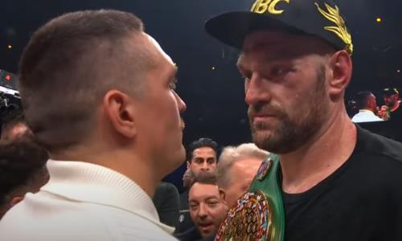

Сьогодні, 19:28.
Чемпіон WBA, WBO, IBO та IBF у надважкій вазі Олександр Усик (21-0, 14 КО) розповів, чи погодиться на перенесення бою з володарем титулу WBC Тайсоном Ф’юрі (34-0-1, 24 КО).
– Коли Френк Воррен скаже, що треба відтермінувати бій, як ти відреагуєш?
– Ні. Навіщо він підписував контракт і навіщо вони оголошували поєдинок до того, поки Ф’юрі не відбоксував (проти Нганну - прим.)? Вони мене кошмарили, чи що? - сказав Усик.
До бою з Нганну Ф’юрі наполягав на тому, що бій з Усиком має відбутися 23 грудня. Після поєдинку Воррен сказав, що поєдинок за звання абсолюта пройде на початку наступного року.
Первинна стаття